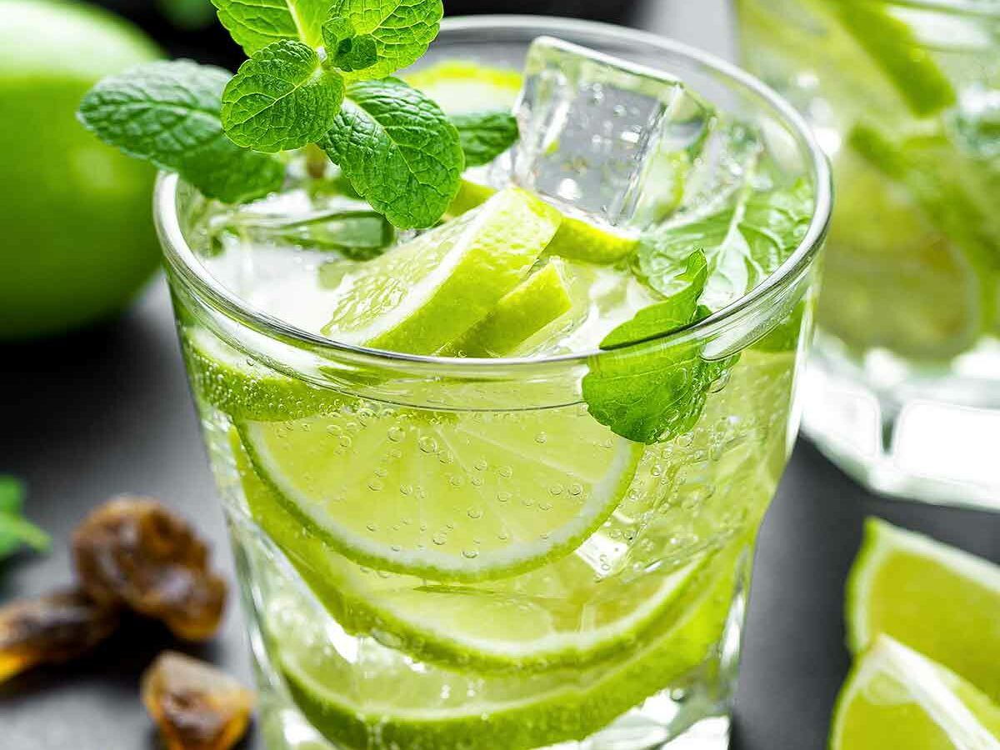

Mojito!

A classic cuban drink for an authentic meal!
Description
This is an authentic recipe for mojito.
I sized the recipe for one serving, but you can adjust it accordingly and make a pitcher full.
It's a very refreshing drink for hot summer days.
Be careful when drinking it, however.
If you make a pitcher you might be tempted to drink the whole thing yourself,
and you just might find yourself talking Spanish in no time!
Ingredients
- 1.5 fluid ounce of white rum
- 10 fresh mint leaves, cut into 3 wedges
- 1 medium lime
- 2 tablespoons withe sugar or to taste(or simple syrup
- 1/2 cup of clun soda
Instructions
- Place mint leaves and 1 lime wedge into a sturdy glass. Use a muddler and crush to release mint oils and lime juice.
- Add remaining lime wedges and 2 tablespoons sugar, and muddle again to release the lime juice. Do not strain the mixture.
- Fill the glass almost to the top with ice. Pour in rum and fill the glass with club soda.
- Stir, taste, and add more sugar if desired.